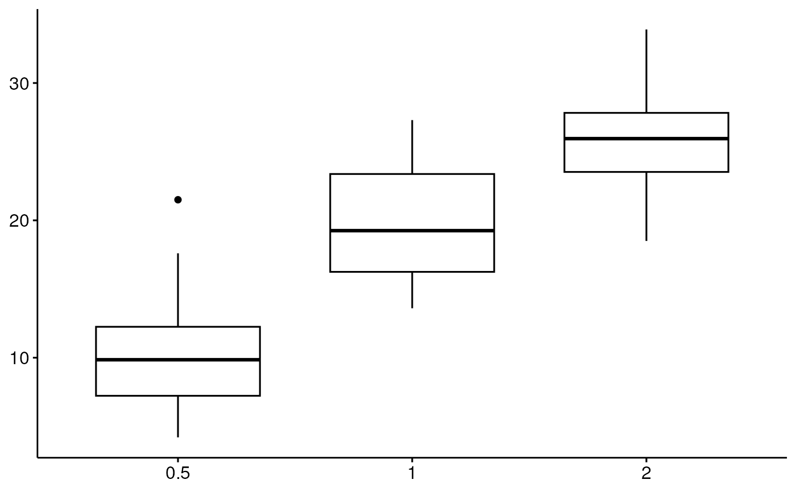
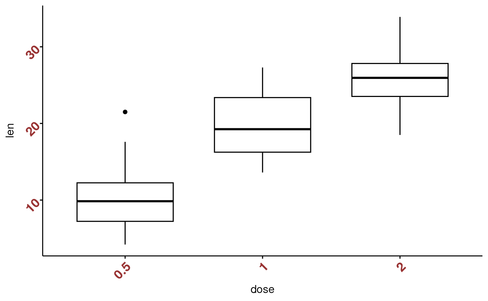
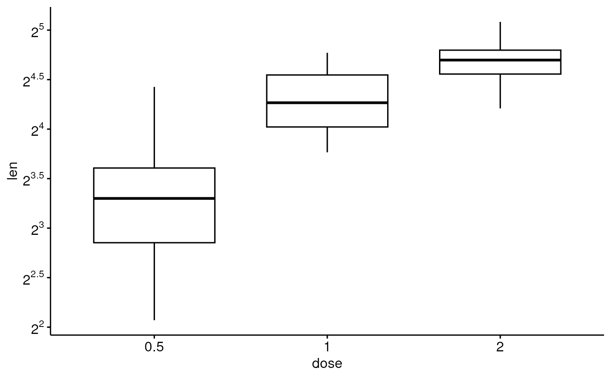

Graphical parameters
Graphical parameters
ggpar(p, palette = NULL, gradient.cols = NULL, main = NULL, submain = NULL, caption = NULL, xlab = NULL, ylab = NULL, title = NULL, subtitle = NULL, font.main = NULL, font.submain = NULL, font.x = NULL, font.y = NULL, font.caption = NULL, font.title = NULL, font.subtitle = NULL, xlim = NULL, ylim = NULL, xscale = c("none", "log2", "log10", "sqrt"), yscale = c("none", "log2", "log10", "sqrt"), format.scale = FALSE, legend = NULL, legend.title = NULL, font.legend = NULL, ticks = TRUE, tickslab = TRUE, font.tickslab = NULL, x.text.angle = NULL, y.text.angle = NULL, xtickslab.rt = x.text.angle, ytickslab.rt = y.text.angle, xticks.by = NULL, yticks.by = NULL, orientation = c("vertical", "horizontal", "reverse"), ggtheme = NULL, ...)
Arguments
- p
- an object of class ggplot or a list of ggplots
- palette
- the color palette to be used for coloring or filling by groups. Allowed values include "grey" for grey color palettes; brewer palettes e.g. "RdBu", "Blues", ...; or custom color palette e.g. c("blue", "red"); and scientific journal palettes from ggsci R package, e.g.: "npg", "aaas", "lancet", "jco", "ucscgb", "uchicago", "simpsons" and "rickandmorty". Can be also a numeric vector of length(groups); in this case a basic color palette is created using the function palette.
- gradient.cols
- vector of colors to use for n-colour gradient. Allowed values include brewer and ggsci color palettes.
- main, title
- plot main title.
- submain, subtitle
- plot subtitle.
- caption
- plot caption.
- xlab
- character vector specifying x axis labels. Use xlab = FALSE to hide xlab.
- ylab
- character vector specifying y axis labels. Use ylab = FALSE to hide ylab.
- font.main, font.submain, font.caption, font.x, font.y
- a vector of length 3 indicating respectively the size (e.g.: 14), the style (e.g.: "plain", "bold", "italic", "bold.italic") and the color (e.g.: "red") of main title, subtitle, caption, xlab and ylab, respectively. For example font.x = c(14, "bold", "red"). Use font.x = 14, to change only font size; or use font.x = "bold", to change only font face.
- font.title, font.subtitle
- alias of font.submain and font.submain, respectively.
- xlim, ylim
- a numeric vector of length 2, specifying x and y axis limits (minimum and maximum), respectively. e.g.: ylim = c(0, 50).
- xscale, yscale
- x and y axis scale, respectively. Allowed values are one of c("none", "log2", "log10", "sqrt"); e.g.: yscale="log2".
- format.scale
- logical value. If TRUE, axis tick mark labels will be formatted when xscale or yscale = "log2" or "log10".
- legend
- character specifying legend position. Allowed values are one of c("top", "bottom", "left", "right", "none"). To remove the legend use legend = "none". Legend position can be also specified using a numeric vector c(x, y); see details section.
- legend.title
- legend title.
- font.legend
- legend text font style; e.g.: font.legend = c(10, "plain", "black").
- ticks
- logical value. Default is TRUE. If FALSE, hide axis tick marks.
- tickslab
- logical value. Default is TRUE. If FALSE, hide axis tick labels.
- font.tickslab
- Font style (size, face, color) for tick labels, e.g.: c(14, "bold", "red").
- x.text.angle, y.text.angle
- Numeric value specifying the rotation angle of x and y axis tick labels, respectively. Default value is NULL. For vertical x axis texts use x.text.angle = 90.
- xtickslab.rt, ytickslab.rt
- Same as x.text.angle and y.text.angle, respectively. Will be deprecated in the near future.
- xticks.by, yticks.by
- numeric value controlling x and y axis breaks, respectively. For example, if yticks.by = 5, a tick mark is shown on every 5. Default value is NULL.
- orientation
- change the orientation of the plot. Allowed values are one of c( "vertical", "horizontal", "reverse"). Partial match is allowed.
- ggtheme
- function, ggplot2 theme name. Default value is theme_pubr(). Allowed values include ggplot2 official themes: theme_gray(), theme_bw(), theme_minimal(), theme_classic(), theme_void(), ....
- ...
- not used
Examples
# Load data data("ToothGrowth") df <- ToothGrowth # Basic box plot # +++++++++++++++++++++++++++ p <- ggboxplot(df, x = "dose", y = "len") # Change the plot orientation: horizontal ggpar(p, orientation = "horiz")# Change main title and axis labels # ++++++++++++++++++++++++++++ ggpar(p, main = "Plot of length \n by dose", xlab = "Dose (mg)", ylab = "Length")# Title font styles: 'plain', 'italic', 'bold', 'bold.italic' ggpar(p, main = "Length by dose", font.main = c(14,"bold.italic", "red"), font.x = c(14, "bold", "#2E9FDF"), font.y = c(14, "bold", "#E7B800"))# Hide axis labels ggpar(p, xlab = FALSE, ylab = FALSE)# Change colors # ++++++++++++++++++++++ # Change outline colors by groups: dose p2 <- ggboxplot(df, "dose", "len", color = "dose") p2# Use custom color palette ggpar(p2, palette = c("#00AFBB", "#E7B800", "#FC4E07"))# Use brewer palette ggpar(p2, palette = "Dark2" )# Use grey palette ggpar(p2, palette = "grey")# Use scientific journal palette from ggsci package ggpar(p2, palette = "npg") # nature# Axis ticks, limits, scales # +++++++++++++++++++++++++ # Axis ticks labels and rotation ggpar(p, font.tickslab = c(14,"bold", "#993333"), xtickslab.rt = 45, ytickslab.rt = 45)# Hide axis ticks and tick labels ggpar(p, ticks = FALSE, tickslab = FALSE)# Axis limits ggpar(p, ylim = c(0, 50))# Axis scale ggpar(p, yscale = "log2")# Format axis scale ggpar(p, yscale = "log2", format.scale = TRUE)# Legends # ++++++++++++++++++ # Change legend position and title ggpar(p2, legend = "right", legend.title = "Dose (mg)", font.legend = c(10, "bold", "red"))